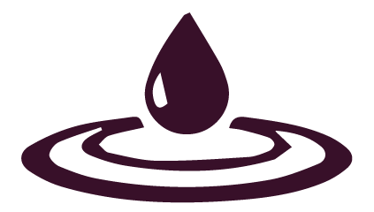
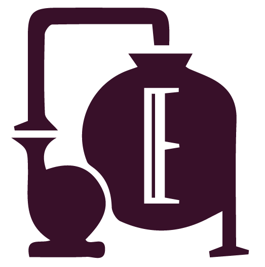

Objet du quotidien STS
XVIIIe siècle
L'eau, objet d'étude scientifique
Un sujet d'étude relativement tardif.
- Lavoisier [1743-1794]
- Cavendish [1731-1810]
- Monge [1746-1818]
- etc.
Fin XIXe siècle
L'hydrologie est enseignée
dans les écoles de pharmacie
→ La mode des cures thermales
parmi les classes sociales aisées
L'eau minérale naturelle est vendue en pharmacie.
Il boit Contrexéville. »
1960 les supermarchés
→ De l'eau thérapeutique
à l'eau diététique
L'eau diététique
→ emballage jetable → liberté & légèreté
Production de
25 millions de tonnes
de déchet de PET
par an, majoritairement non recyclé
PET = Polyéthylène Téréphtalate
2024 Pollution des nappes souterraines
Les groupes Nestlé
(Perrier, Vittel, Hépar et Contrex...)
et Sources Alma
(Cristaline, Saint-Yorre, Vichy Célestins, Châteldon...) ont été épinglés par la justice…
→ traitements non conformes
→ prélèvements sur des forages sans autorisation d’exploitation
→ mélanges d’eaux dites « minérales » ou « de source » avec de l’eau du robinet...
2024
L’eau en bouteille contient des centaines de milliers de particules de plastique PET par litre
- 90 % nanoplastiques
- 10 % microplastiques
Définition juridique
des catégories d’eaux minérales naturelles et eaux potables préemballées
Eau minérale naturelle
Eau de source
Eau purifiée
Eau d’origine souterraine, sans traitement, dont les composants physicochimiques – la teneur en minéraux de l’eau minérale – restent stables dans le temps.
Eau d’origine souterraine microbiologiquement saine et protégée contre les risques de pollution, exploitée par une ou plusieurs émergences naturelles ou forées.
Eau rendue potable par traitement, préemballée, qui peut être chimiquement traitée dans le but d’en faire disparaître certains composants. Des eaux de compositions différentes peuvent être mélangées.
« Plusieurs producteurs d’eau en bouteille ont filtré illégalement leur eau pour masquer une contamination. »
« Nestlé et d’autres industriels ont caché au public que l’eau qu’ils pompaient était contaminée. »
Enquête du Monde et de la cellule d'investigation de Radio France, 2024
L’eau est-elle une marchandise comme les autres ?

Europe Contrôles de qualité
| Eau du robinet
→ 62 paramètres |
Eau embouteillée
→ 26 paramètres |
Pollution des nappes souterraines
Les groupes Nestlé (Perrier, Vittel, Hépar et Contrex...) et Sources Alma (Cristaline, Saint-Yorre, Vichy Célestins, Châteldon...) ont été épinglés par la justice…
→ traitements non conformes
→ prélèvements sur des forages sans autorisation d’exploitation
→ mélanges d’eaux dites «minérales» ou «de source» avec de l’eau du robinet...
Plusieurs producteurs d’eau en bouteille ont filtré illégalement leur eau pour masquer une contamination
Nestlé et d’autres industriels ont caché au public que l’eau qu’ils pompaient était contaminée.
Cellule investigation de Radio France, Marie Dupin, 30.01.2024
Définition juridique
des catégories d’eaux minérales naturelles et eaux potables préemballées
Eau minérale naturelle
Eau de source
Eau purifiée
Sources :
« La vente des eaux minérales par les pharmaciens », C. Raynal, Revue d’histoire de la pharmacie, 2004
La Bataille marketing des Eaux, www.sircome.fr
« La Saga des marques », J. Watin-Augouard, Revue des marques — www.prodimarques.com
« Le secteur de l’eau minérale en France », P. Gilibert, Aquamania.net
Directive80/777/CEEdu Conseil, du 15 juillet 1980, annexe 1, définition
Norme CODEX STAN 108-1981 pour les eaux minérales naturelles modifiée en juin 1997 et juillet 2001, 2.2.2.
Décret n°89-369 du 6 juin 1989 relatif aux eaux minérales naturelles et eaux potables préemballées, titre II, article 13.
« Rapport 11-02 Les eaux de consommation humaine et la Santé publique en France métropolitaine », P. Pène et Y. Lévi, Bulletin de l’Académie nationale de Médecine, 2011
Earth Policy Institute, compilation provenant de « Beverage Marketing Corporation data », de l’International Bottled water association, « the 2005 Stats » & « Bottled Water Recovery 2011 », Beverage Marketing Corporation Copyright 2012 — www.bottledwater.org
« Global Bottled Water Industry: A Review of Impacts and Trends », United Nations University Institute for Water, Environment and Health, 2023
N. Qian, X. Gao, X. Lang, H. Deng, T.M. Bratu, Q. Chen, P. Stapleton, B. Yan, & W. Min, “Rapid single-particle chemical imaging of nanoplastics by SRS microscopy”, Proc. Natl. Acad. Sci. U.S.A. 121 (3) e2300582121, 2024
Enquête franceinfo « Plusieurs producteurs d’eau en bouteille ont filtré illégalement leur eau pour masquer une contamination », 2024
« Evian, Vittel, Volvic : les industriels connaissent-ils suffisamment bien l’eau qu’ils exploitent ? », TheConversation, 2025